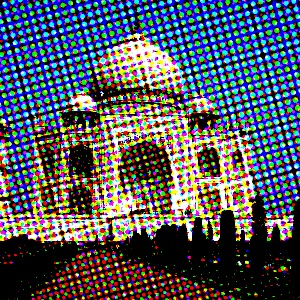

Figure 17.74. Applying example for the Newsprint filter

Original image

Filter “Newsprint” applied using RGB color mode, PSSquare pattern for all channels, red period 6, green period 8, blue period 10, angle 15 for all channels.
This filter performs digital halftoning with optional modulations. Halftoning is the process of rendering an image with multiple levels of gray or color (i.e. a continuous tone image) on a device with fewer tones; often a bi-level device such as a printer or typesetter. Be aware that Newsprint is not a filter for generating half-tone screens for print, but for simulating the appearance of printing with them.
The basic premise is to trade off resolution for greater apparent tone depth (this is known as spatial dithering).
There are many approaches to this, the simplest of which is to throw away the low-order bits of tone information; this is what the posterize filter does. Unfortunately, the results don't look too good. However, no spatial resolution is lost.
Imagine a grid super-imposed on the original image. The image is divided into cells by the grid - each cell will ultimately hold a single spot made up of multiple output pixels in order to approximate the darkness of the original image in that cell. Obviously, a large cell size results in a heavy loss in resolution!

- Presets, “Input Type”, Clipping, Blending Options, Preview, Merge filter, Split view
-
![[Note]](images/note.png)
Note These options are described in Section 2, “Common Features”.
- Channels
-
This group controls the channels to use and the settings for each channel.
- Color Model
-
Select which color inks to use: White on Black, Black on White, RGB, or CMYK.
- For each color ink or channel
-
Settings that can be changed for each color ink or channel are listed here.
- Pattern
-
Select the halftoning pattern to use. Choices are Line, Circle, Diamond,, PSSquare (or Euclidean) dot, Crossing Lines.
- Period
-
The number of pixels across one repetition of a base pattern at base resolution.
- Angle
-
The grid angle that should be used. This angle can be adjusted with the slider, number entry, or using the angle control by moving the arrow in the circle.
- Black pullout
-
This setting is only available when CMYK was chosen as Color Model and the selected channel is Black. It regulates how much of common gray to pull out of CMY.
- Lock patterns, Lock periods, Lock angles
-
These three check boxes, if enabled, lock the settings mentioned above to be the same for all channels. If disabled, then these settings can be set individually for each channel.
- Quality
-
- Anti-alias oversampling factor
-
This sets the number of samples that are averaged for anti-aliasing the result.
Proper halftoning does not need anti-aliasing: the aim is to reduce the color depth after all! However, since this filter is mainly for special effects, the results are displayed on screen instead of on a printer. So it is often useful to apply a little anti-aliasing to simulate ink smearing on paper. If you do want to print the resulting image then set the anti-aliasing to 1 (i.e., off).
- Effects
-
- Turbulence
-
Color saturation dependent compression of period.
- Blocksize
-
Number of periods per tile. This tiling avoids high frequency anomalies that angle boost causes.
- Angle Boost
-
Multiplication factor for the desired rotation of the local space for the texture. The way this is computed makes it weak for desaturated colors and possibly stronger where there is color.